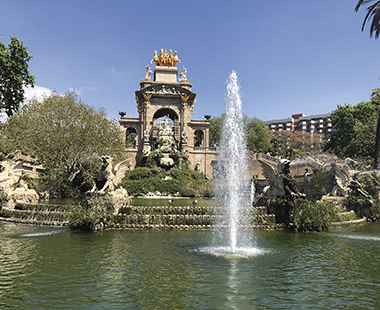
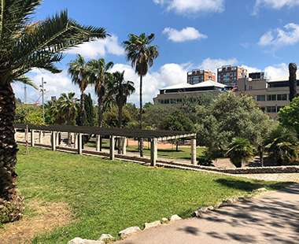
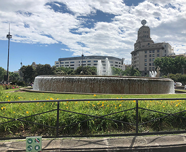

PARCS I PLACES
LA CIUTADELLA

El Parc de la Ciutadella es troba a Ciutat Vella, va ser inagurat al 1877 pel dissenyador Josep Fontserè. Aquest parc és el segon més gran de Barcelona.
És molt visitat perquè tenim al costat el Zoo de Barcelona, també perque hi ha un canal on ports agafar una barca, escultures, cascades i molta fauna i flora.Com arribar
CAN MERCADER

El parc Can Merader va ser construït perquè hi havia un “Palau” que va ser construït al 1865, però com al costat hi havia la “Torre de la Miranda” van decidir després de 5 anys, crear el parc.
Aquest parc és molt visitat perquè hi ha uns trens molts petits on pots veure tot el parc asegut, també pots anar ha fer esport, hi ha molts estancs distrubuits on hi han ànecs, tortugues i peixos i per últim hi ha una piscina. Com arribar
PLAÇA CATALUNYA

La plaça Catalunya és una de les més grans de Espanya i la més centrada de Barcelona.
Hi han fonts, escultures, bancs per seure, zones verdes i molts coloms.
També es celebren concerts, esdeveniments i altres celebracions i també és molt important perquè l’estaçio del metre és la que més línies té.Com arribar